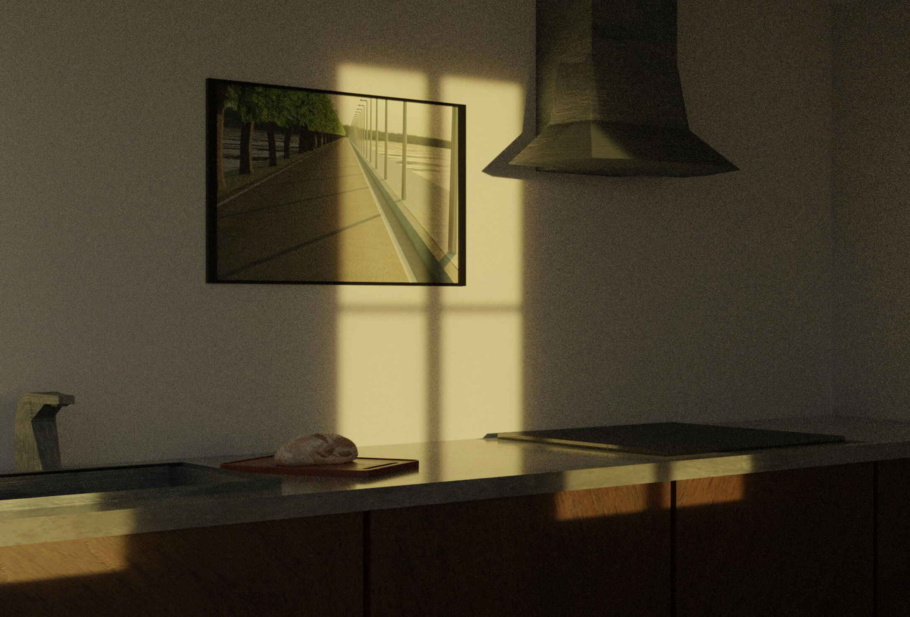
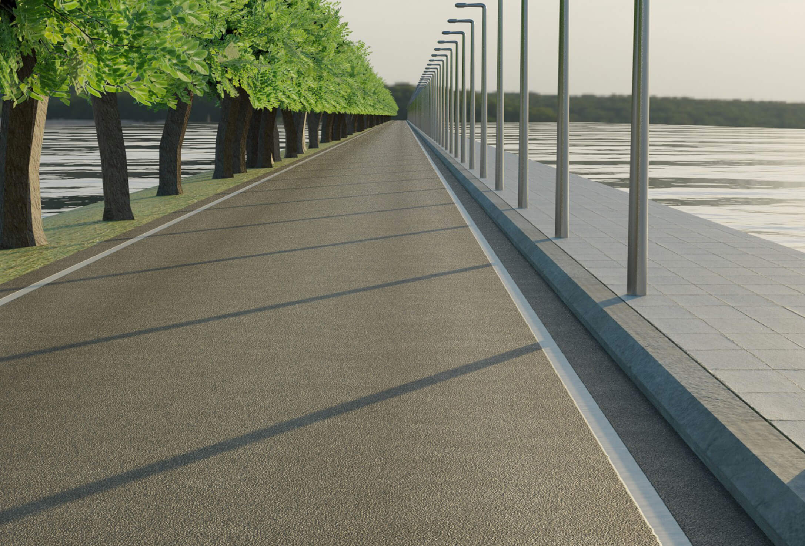

Due to the lockdown that many of us had to go through I found myself missing things from before I was homebound, most notable of these was my commute to and from school. During the last couple months I missed moments where I had the opportunity to clear my mind and not feel guilty about not working on something, my cycling offered this opportunity, so I attempted to create a digital alternative; the result is a video that is supposed to work as an endless loop that pulls you away from the world for a bit and lets you slow down. Added are some older attempts and examples of places where such a video could be presented, such as stairways and kitchens, where you perform mostly simple repetitive actions.

